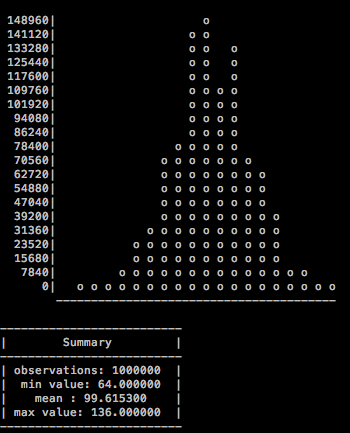
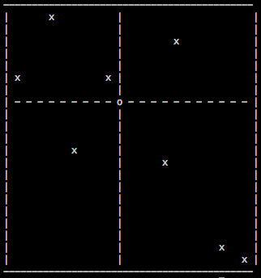
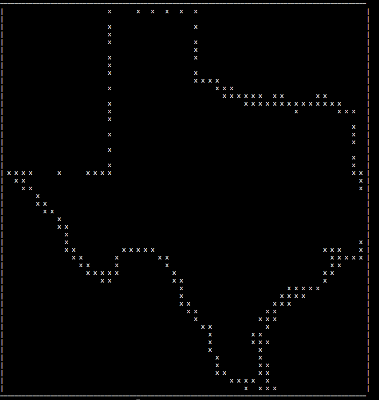
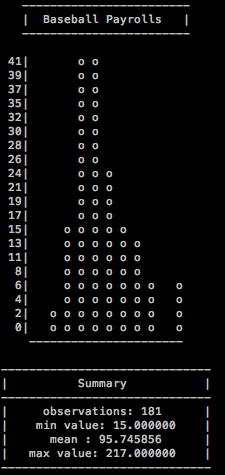
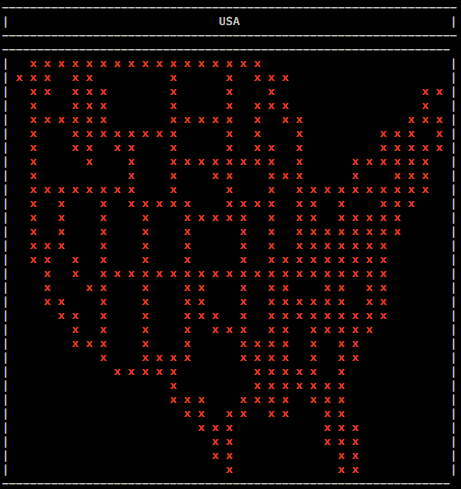

bashplotlib - plotting in the terminal Tweet
by
Have you ever been combing through log files on a server and thought, "This would be a lot easier to investigate if I could just plot this?" Well I was one of those people. I didn't want to keep transfering files off the server just to make a quick plot in R, but I also didn't want to install Rstudio on the server either. I just wanted a quick and dirty way to make some basic plots.
I couldn't find anything that fit the bill so I wrote bashplotlib. It's a command line tool written in pure Python that plots in stdout. It's simple to use and runs fairly quickly on largish files.
The github page has info on installation and usage. To install just run pip install -U bashplotlib
Have fun!
And now for some examples...
To download example data, see examples on github.
hist --file million.txt

scatter -x x_test.txt -y y_test.txt

My personal favorite, plotting maps in the terminal...
scatter --file texas.txt

Who said you had to plot files?
curl http://www.baseball-reference.com/ | grep -o -E "[$]([0-9]+)" | grep -o -E "[0-9]+" \
| hist -t "Baseball Payrolls"

And it does colors
cat lower48.txt | scatter --colour red --title USA --size 30
